1924 Delage 2LCV Race Car Manufacturing
Race Car Manufacturing Engineering Report
Project Goal
Term project for MECE E3610, Materials and Processes in Manufacturing, in a group of four. The goal was to design and build a model of a 1920s race car using the processes from the course: CAD, 3D printing, CAM, CNC milling, silicone casting, and injection molding. We picked the 1924 Delage 2LCV.
Four parts were fabricated: the car body, cockpit, axles, and wheels.
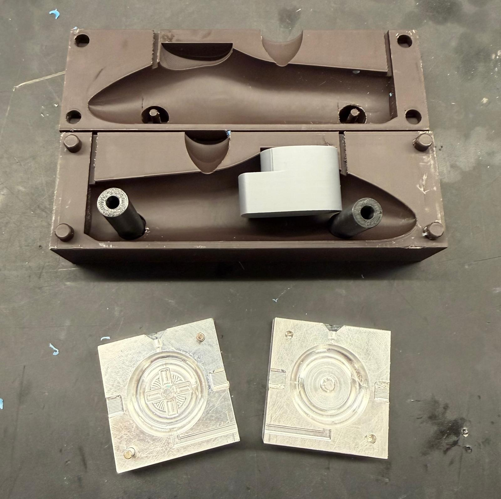
CAD Model
The body was modeled in SolidWorks with a loft. It needed a looping profile, with the height dropping away from the center, so the casting would not trap air. The cockpit, axles, and wheels were separate parts. Their spaces were cut from the body with the combine feature.
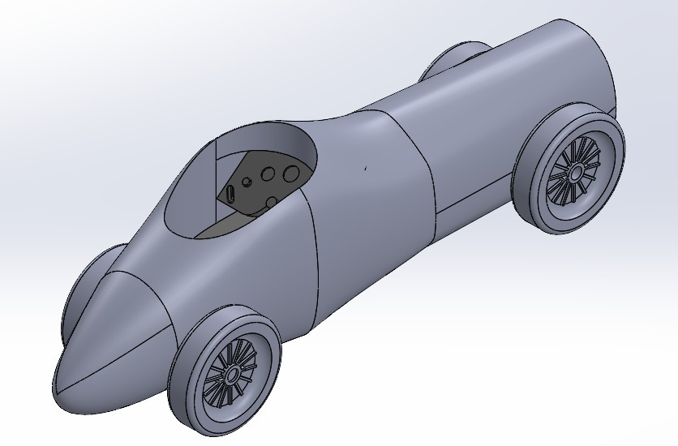
Silicone Casting
- Mold block: 6.25 x 2.25 x 2.25 in, with the body subtracted and a sprue, vents, and locator pins added.
- The first print came out rough. Reprinting vertically on fine settings gave a smooth cast surface.
- 65 g of each silicone part, mixed, vacuum degassed, poured slowly through the sprue, and cured for at least 6 hours.
- Three mold iterations moved the parting line to center and fixed the sprue size and location.
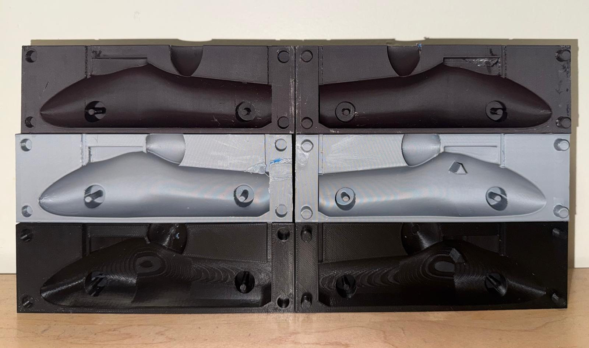
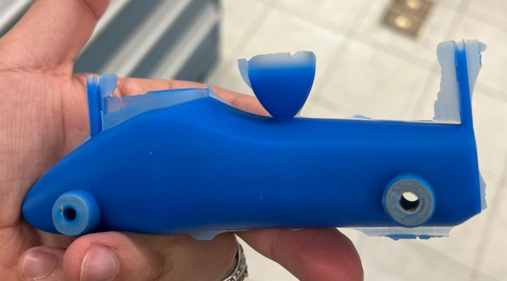
Injection Molding
The wheel mold was designed and programmed in Fusion 360, then machined from two aluminum blocks on a Tormach 770M. Tools: 1/8 in ball end mill, 1/16 in ball end mill, center drill, and #30 drill. The mold included the nozzle hole and runner, pry cavities, alignment holes, and a cooling vent.
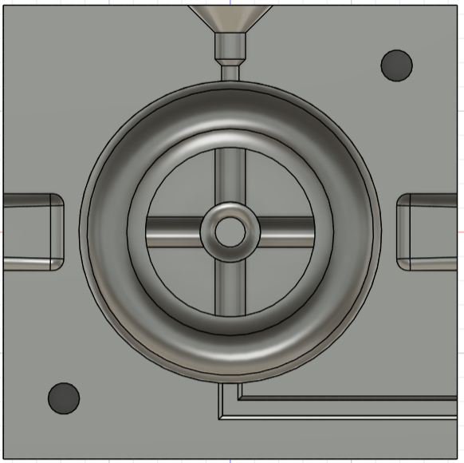
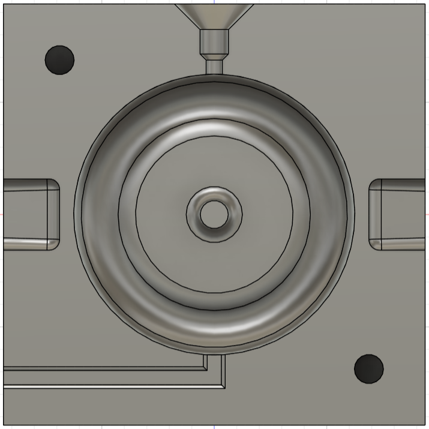
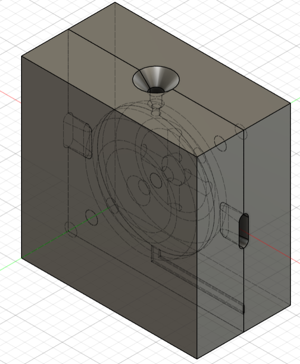
The shop ran out of PLA, so we molded the wheels in polypropylene. We made six to get a full matching set, then sanded them smooth.
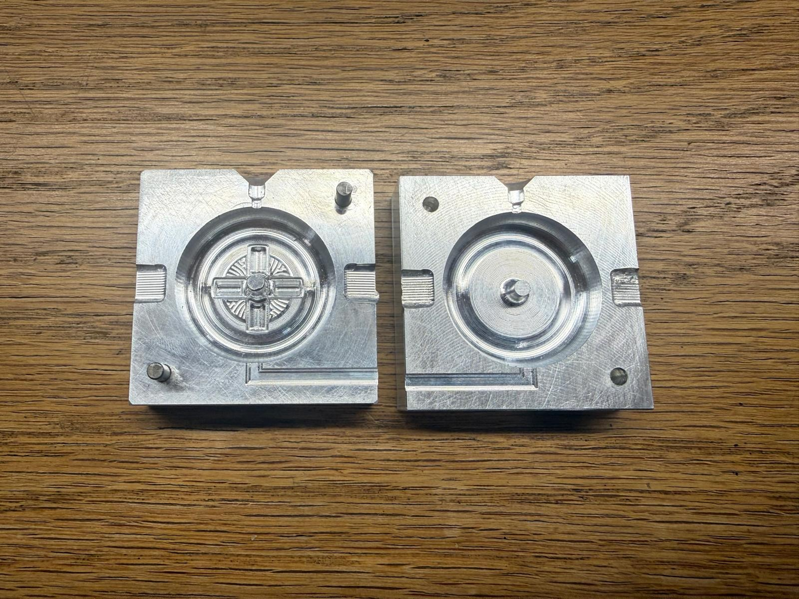
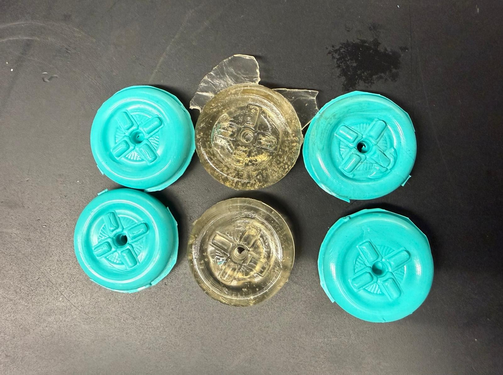
Assembly
The axles were cut to length and chamfered on the disc sander. One wheel was press-fit on each axle. Custom 3D-printed axle holders, contoured to the body, took out the axle wiggle. The second wheels were hammered on through a cloth, and the cockpit slid into place.
What We Would Improve
The cockpit sits slightly too low, so the silicone wraps over its top edge and covers some of its detail. Tighter tolerances on the axle holes and wheel fits would cut down the post-processing.
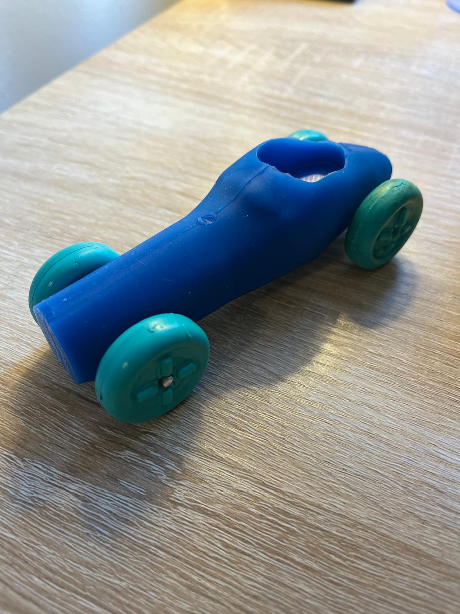
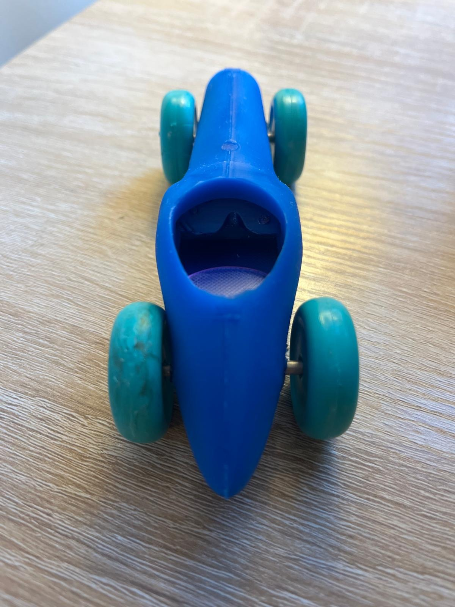
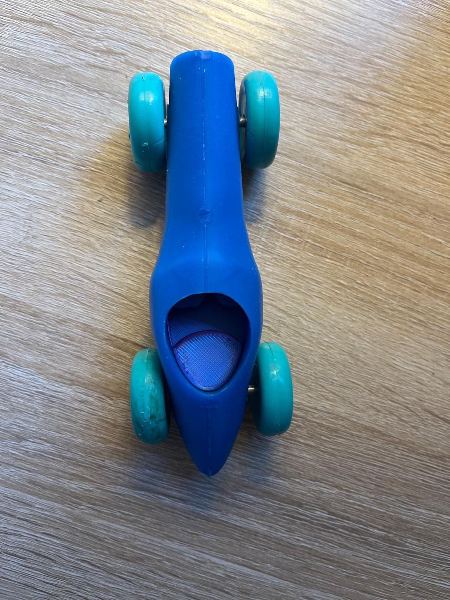
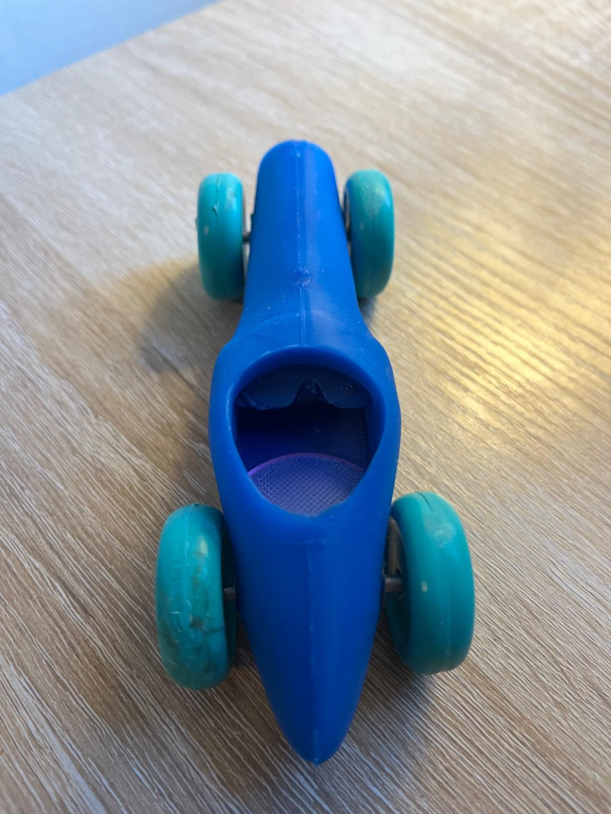
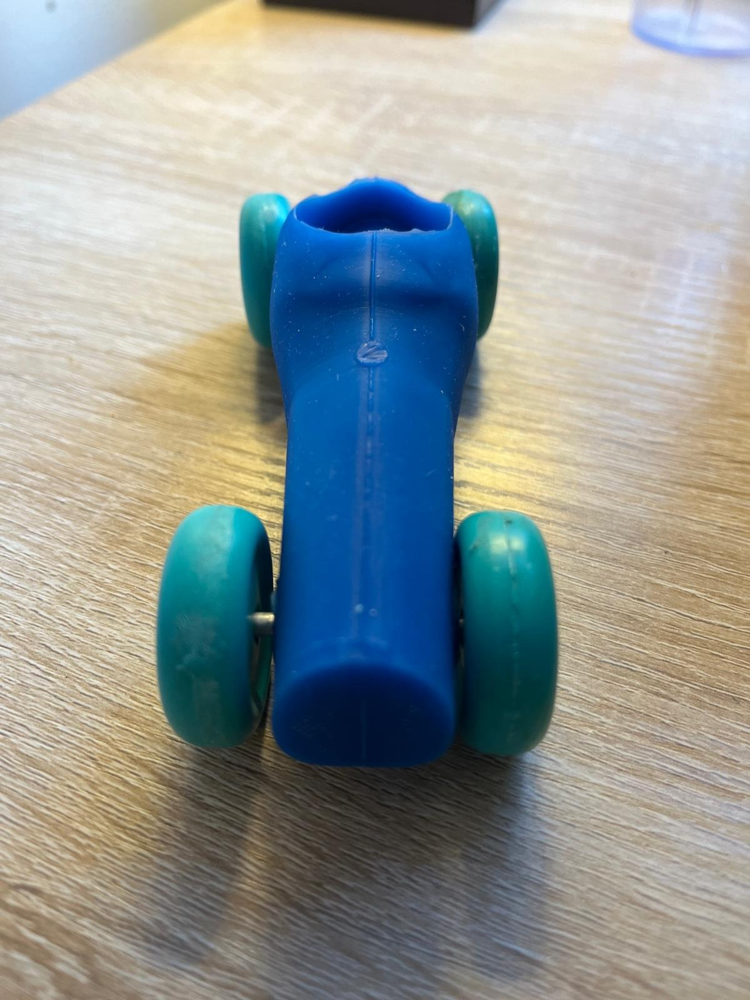
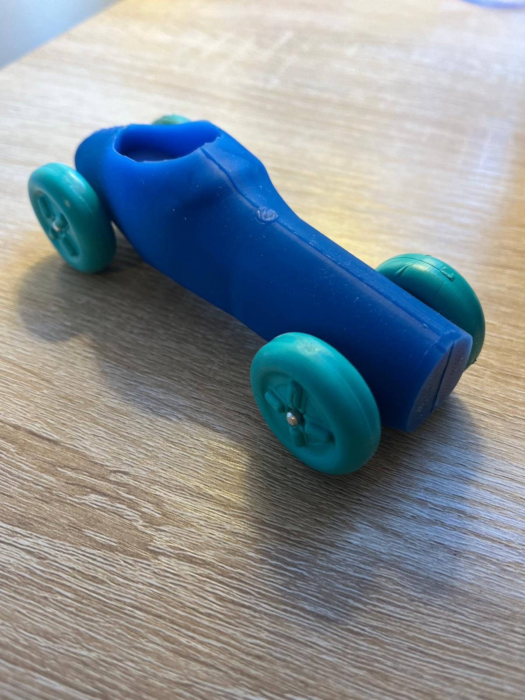
The finished model from six angles